B.S. in Electrical & Computer Engineering • University of Rochester (Expected May 2027)
I am an electrical and robotics engineer focused on embedded systems, custom PCB design, and autonomous
motion planning. My work spans from building modular hardware and power electronics in KiCad to developing
C++ and ROS2 systems for robotics applications like motion planning and manipulator control. I also do enjoy
the hardware side of things like wiring and debugging systems, soldering components, and writing low-level
code for motor, actuator, and encoder interfaces.
Outside of academics, I do enjoy balancing being inside watching shows and also being outdoors hiking,
playing sports, and rock climbing.
I am currently seeking full-time opportunities in embedded systems, robotics, and electrical engineering for
Summer 2027 and beyond. Please feel free to reach out via email or LinkedIn!
Nicslab Ops, Inc. •
Rochester, NYMay 2026 – Aug 2026
Electrical Engineering Intern
Diagnosed component-level faults on field-returned multichannel SMU and XDAC boards to save $40,000+ in
replacement costs. Established a Factory Acceptance Testing (FAT) facility from scratch with
high-precision DMMs and configured headless SSH diagnostics.
Read more →
RAIL Lab (Prof. Thomas
Howard)May 2026 – Aug 2026
Undergraduate Robotics Researcher
Built a C++ ROS 2 kinodynamic motion planning package for a Clearpath Husky rover. Developed an offline
state-lattice generator using a Model-Predictive Trajectory Generation (MPTG) shooting method and
accelerated online A* obstacle checks using 64-bit bitmask collision detection in RViz2.
Read more →
Projects
Senior Design Capstone
(Ideation Stage)
In Progress
Autonomous Wall-Climbing & And Crack and Deformities Detection Robot
Developing an autonomous wall-climbing robot for vertical surface locomotion and real-time 3D mapping.
Architecting power electronics, custom distribution and driver PCBs, embedded control firmware, and ROS
2 mapping pipeline.
Read more →
UR Robotics ClubMar 2024 – Present
Modular Rover Architecture, Custom PCBs & Control Systems
Overhauled the rover's electrical system from a single wire-congested box into a distributed modular
architecture. Designed custom Corner and Middle PCBs in KiCad integrating Teensy 4.1 microcontrollers,
H-bridge motor drivers, and linear actuator relays, paired with a 115200-baud C++ ROS UART teleoperation
pipeline and Gazebo localization.
Read more →
Off-Grid LoRa Digital Contact Tracker & Telemetry GUI
Built an off-grid bidirectional GPS tracking and telemetry system achieving a validated 3.2 km range
across urban environments. Implemented Stop-and-Wait ARQ and Hamming Forward Error Correction alongside
a real-time Python map GUI and CLI logger.
Read more →
6-DOF Robotic Arm Inverse Kinematics Control System
Developed a 6-degree-of-freedom spherical wrist manipulator control system in C++ and ROS 2. Wrote a
Jacobian-based inverse kinematics solver using Eigen and unit quaternions to avoid Gimbal lock and reach
3D target poses with near-zero error (norm < 0.0001).
Read more →
Drone Power Distribution & Avionics
Designed a 4S power distribution harness for an STM32F4 quadcopter,
sized for an 800 W peak design load.
Read more →
PIC32 Motor Position Control
Implemented interrupt-driven PI position control for a DC gearmotor
using quadrature encoder feedback and an H-bridge.
Read more →
Teaching & Leadership
ECE Teaching Assistant & Workshop Leader
Aug 2025 – Present
University of Rochester
ECE 216 (Mechatronics & Embedded Systems): Facilitate lab sessions guiding
students through Arduino hardware integration, timer interrupts, motor controls, and SPI communication.
ECE 113 (Circuits & Signals): Lead problem-solving workshops covering more
advanced version of topics from 101, introducing frequency domain of time signals, phasor, and non
linear circuit analysis using loadlines.
ECE 101 (Introduction to Electrical and Computer Engineering): Lead problem-solving
workshops for 40+ students covering fundamental circuitry, logic design, and signals.
Vice President UR Robotics
April 2025 - Present
University of Rochester
Scheduling events, doing outreach emails, and sending out communications regarding Preliminary Design
Meetings and other team meetings.
Attending club meetings with faculty members.
Lead Content & Material Manager
May 2022 – Feb 2023
UNICEF "Generation Future" • Cambodia
Secured a $2,000 UNICEF grant by authoring a detailed project proposal to fund STEM education
outreach.
Organized and led 6 hands-on workshops across two provinces for 200+ young women, teaching mechanical
advantage and engineering fundamentals.
ECE 348 Senior Design Capstone •
University of Rochester • Sep 2026 – Present
In Progress
Autonomous Wall-Climbing & And Crack and Deformities Detection Robot
Focus: Power Electronics, Custom PCBs & Embedded Firmware
Inspecting vertical infrastructure and navigating obstructed, multi-plane environments poses a major
challenge for conventional ground rovers. For our senior design capstone, we are developing an
autonomous wall-climbing mapping robot capable of transitioning onto and traversing
vertical surfaces while executing real-time 3D terrain mapping.
Current Engineering Scope & Architecture
1. Power Electronics & Custom KiCad PCB Design
Architecting a high-current power delivery and regulation system capable of sustaining active
wall-adhesion actuators and drive motors simultaneously without inducing brownouts on the compute rails.
Simulating analog power stages in HSPICE and designing custom power distribution and
motor control PCBs in KiCad with isolated logic and high-current copper pours.
2. Embedded Firmware & Closed-Loop Locomotion Control
Developing low-level embedded C/C++ firmware to coordinate drive actuation, adhesion force regulation,
and IMU/encoder feedback loops for stable vertical climbing.
Implementing deterministic serial communication between the low-level microcontroller and the
high-level onboard computer.
3. NVIDIA Jetson & ROS 2 3D Terrain Mapping
Integrating an NVIDIA Jetson compute module running ROS 2 to fuse
depth/LiDAR and inertial telemetry into a real-time 3D spatial map of vertical and complex surfaces.
University of Rochester Robotics Club (NASA Lunabotics) • Mar 2024 – Present
At the 2025 Lunabotics competition, our rover ran everything through two electronics boxes, with every
motor, driver, and microcontroller wired point-to-point. When something stopped working, we had to dig
through a jungle of wires to find the fault, and that slowed us down every time. It also had a worse failure
mode: when the extraction or deposition system jammed, it pulled enough current to reset the microcontroller
and end our run.
For 2026, I pushed the team to redesign the electronics as separate boards: one per wheel pod and one for
excavation and deposition. A fault now means unplugging a board instead of tracing wires. Last year,
diagnosis took so much time because we had to work through a mass of wire to check whether any were
incorrectly connected or broken. With this new design, we could quickly tell when a corner stopped working;
we knew exactly which module to debug, and wire management, fault checking, and replacing the Teensy took
only minutes.
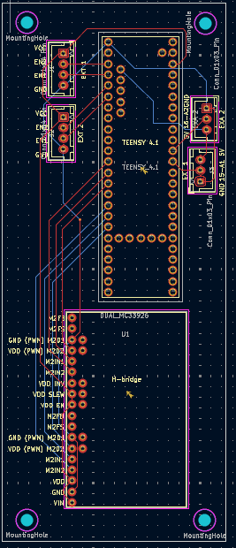
KiCad 3D render of the middle board (Teensy 4.1 carrier).
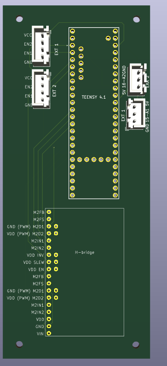
The assembled board with the H-bridge driver and relays.
What I built
Middle board (excavation and deposition). A custom Teensy 4.1 carrier I designed in KiCad.
It has an MC33926 H-bridge for the extraction motor, plus relay outputs and shrouded headers for the one
deposition linear actuator and two other extraction linear actuators. I made a custom board instead of using
a regular perfboard mainly to keep everything within the main central unit on the box, reduce wiring around
the box, and mitigate loose jumpers under vibration during operation.
Corner boards. One per wheel pod, handling driving, steering, and encoder inputs. All four
run identical firmware and receive the same command from the rover's onboard computer. A DIP switch on each
board sets its corner, so there is one program to maintain and any board can be swapped into any position.
Power. The rover runs on separate 12V and 24V rails, and the motor drivers are kept off the
3.3V/5V logic supply. In 2025, when the extraction or deposition system jammed, it pulled enough current to
reset the microcontroller and end our run. Separating motor power from logic power keeps a jam from taking
the controller down.
Teleoperation and firmware
A C++ ROS 2 node reads the gamepad and sends command packets over UART at 115200 baud to the Teensies, using
Linux's termios library. The commands are structured as newline-terminated strings containing the specific
actuation target. To ensure that if the serial connection drops and packets stop arriving, the embedded
firmware triggers a timer fail-safe that immediately halts all motors to prevent the rover from moving out
of control.
The commands sent from the controller to these microcontrollers follow the same format, including actions
with their corresponding PWM signals or boolean values, such as drive and steering, and the actuation system
for deposition and extraction.
Most of the firmware work was safety logic. The rover won’t drive until the steering has aligned, so the
wheels don’t fight each other, which would prevent the motor drivers from stalling and pulling massive
high-current power spikes that could mess up the circuit board and microcontroller. The linear actuators use
edge-triggered state machines, so holding the controller button doesn’t rapidly toggle the relays on and
off; this ensures that the system registers only one clean actuation per deliberate button press.
The Teensy that shorted
This year, however, we also ran into a very big problem of Teensies shorting out just one week before
competition days. The main reason we believed that the Teensy was shorting after reading through their
datasheet was that the Teensy input signal pins were capable of receiving 3.3V high signals;
Since we couldn't order more Teensies in time, we needed replacements, so we chose the readily available
Arduino Mega 2560 board from generous donations from our professor. I moved the rover to an Arduino Mega on
the spot: remapping pinouts, re-terminating harness connections, and adapting the serial firmware. The rover
was driving again in a couple of days of work rewriting the hardware interrupts system to adapt to this
microcontroller change.
Simulation In
progress
I’m building a Gazebo model of the rover that fuses wheel odometry with IMU data, so the software team can
test navigation code before it touches the hardware.
Right now, the robot Gazebo model uses keyboard teleoperation to simplify our testing framework.
The robot first teleoperation running with all Teensy 4.1 microcontrollers.
As VP
I taught underclassmen electronics systems, wiring, soldering, and ROS, and coordinated schedules across the
mechanical, electrical, and software subteams.
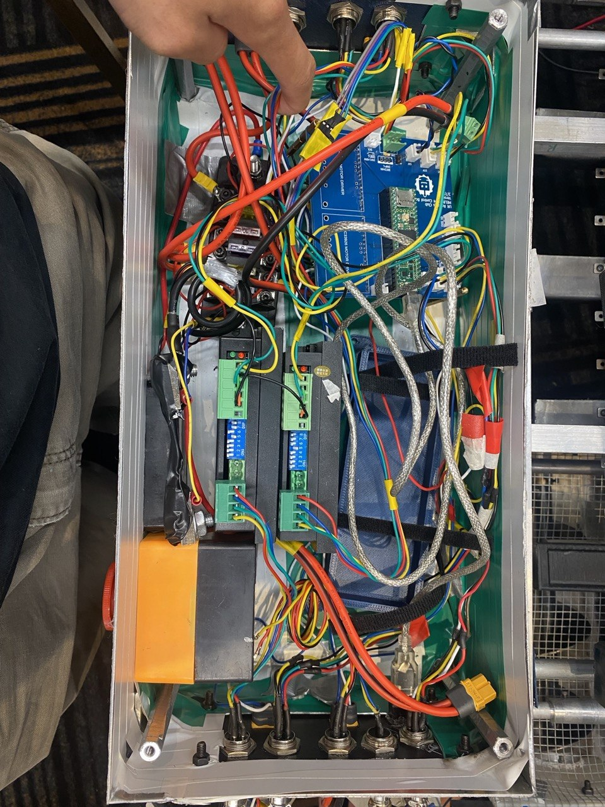
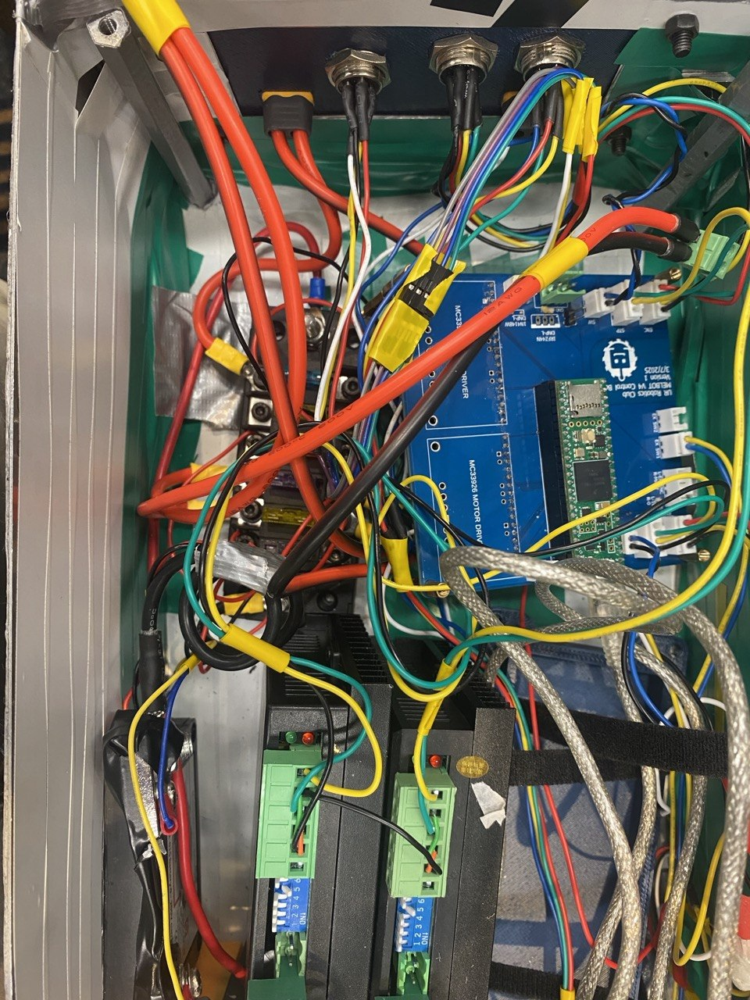
Previous rover electronics box (2025) with all wiring routed through a
single box, which made fault diagnosis difficult.
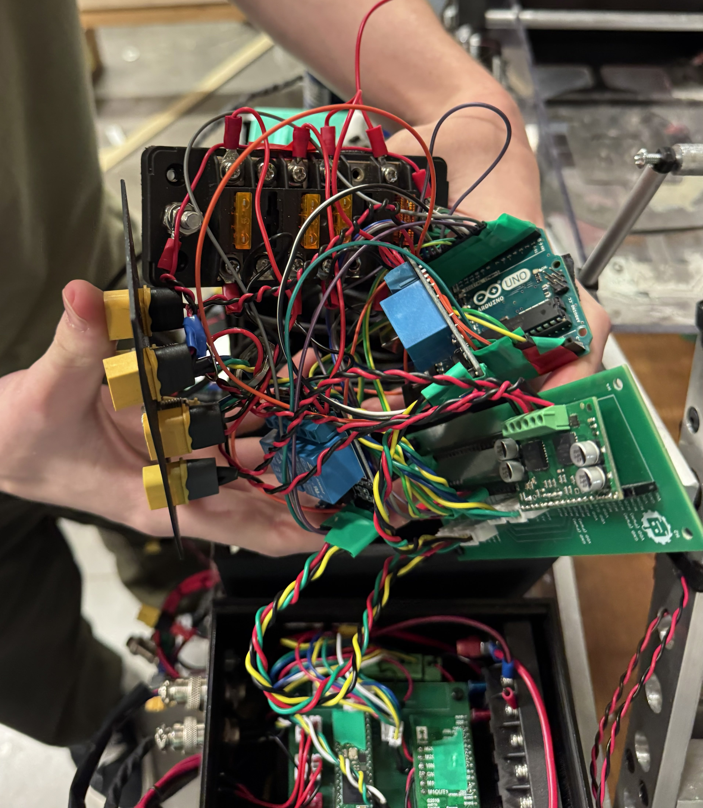
Rewriring with arduino Mega 2560 after Teensy 4.1 shorted.
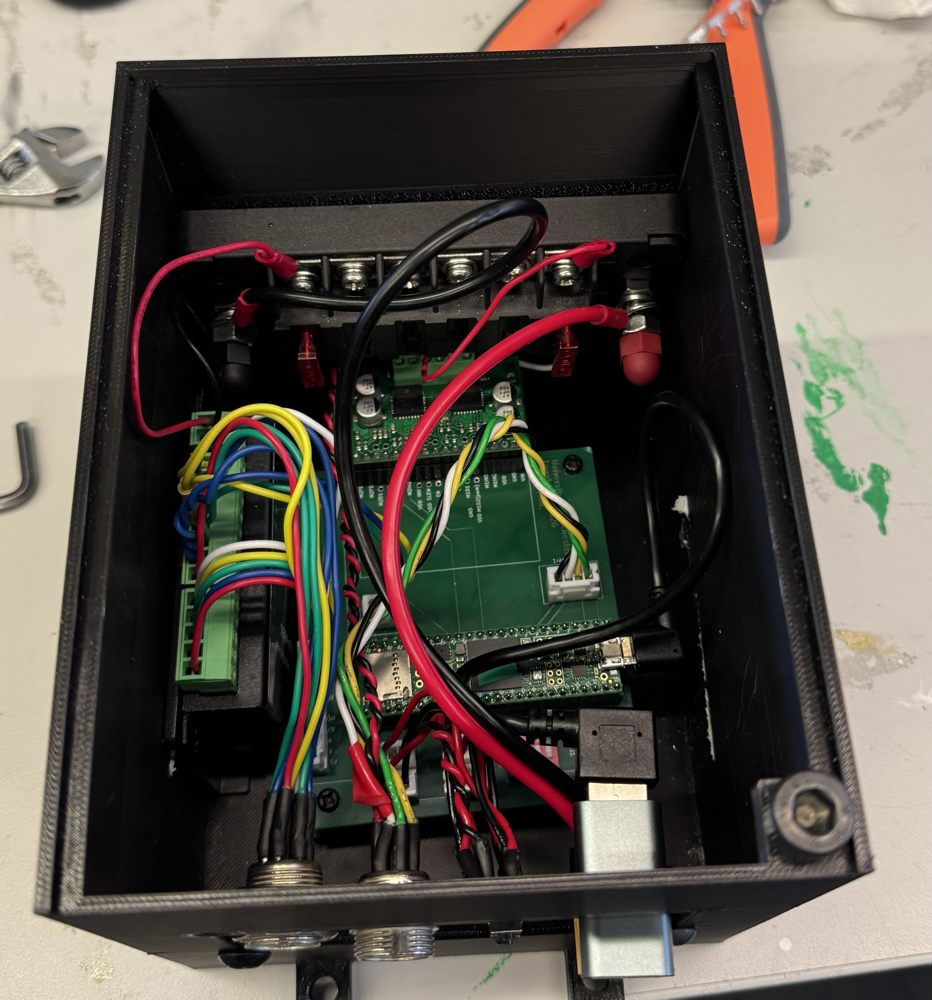
Current rover electronics box (2026) with distributed modular architecture, which allows for easier fault
diagnosis
RAIL Lab, University of Rochester •
Advisor: Prof. Thomas Howard • May 2026 – Aug 2026
Standard grid-based path planners (such as 4-connected or 8-connected A*) assume a robot can rotate in place
or execute sharp, discontinuous turns. While effective for point-mass simulations, these paths fail on
non-holonomic wheeled platforms like the Clearpath Husky, which must obey physical
curvature, velocity, and acceleration limits.
During my 10-week summer research program in the Robotics and Artificial Intelligence Laboratory (RAIL), I
developed a ROS 2 kinodynamic motion planning package in C++ that bridges discrete graph
search and continuous vehicle dynamics. By combining an offline State Lattice generator
with an online A* search, the planner generates smooth, collision-free, and kinematically
feasible trajectories through dense obstacle environments.
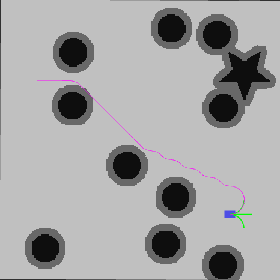
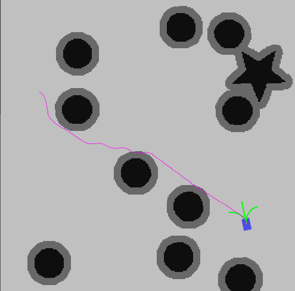
Working path planning with custom map on Rviz2 occupancy grid.
System Architecture & Engineering Contributions
1. Offline C++ State Lattice & Motion Primitive Generation
Built an offline C++ boundary-value problem (BVP) solver utilizing a Model-Predictive
Trajectory Generation (MPTG) shooting method.
Implemented forward kinematics and Jacobian matrix linearization to iteratively adjust control
parameters until simulated trajectories converged on exact target lattice endpoints with smooth
curvature continuity.
Serialized the precomputed library of motion primitives so the online ROS 2 planner could evaluate
complex curves in microseconds without solving differential equations at runtime.
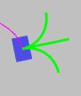
Motion primitives with curves and arcs generated offline.
2. Online A* Search & Occupancy Grid Integration
Designed a ROS 2 node subscribing to custom nav_msgs/OccupancyGrid costmaps, translating
between continuous world coordinates and discrete lattice indices.
Implemented an A* graph search that expands valid motion primitive branches from the robot's current
pose, scoring candidate trajectories based on arc length, heading alignment, and obstacle clearance.
3. High-Speed 64-Bit Bitmask Collision Checking
Engineered a 64-bit bitmask collision detection pipeline that packs occupancy grid
cells and pre-rasterized motion primitive footprints into 64-bit integers.
Replaced slow cell-by-cell iteration with fast bitwise AND operations, significantly
reducing trajectory evaluation latency during online replanning.
4. Real-Time RViz2 Visualization & Validation
Built custom ROS 2 publishers using visualization_msgs/MarkerArray to render the active
state-lattice expansion tree, global trajectory, and robot footprint in RViz2.
Validated the planner across multi-obstacle test maps and presented the research poster at the
University of Rochester ECE Open House.
Nicslab Ops, Inc. • Rochester, NY • May 2026 – Aug 2026
Instrument Repair & SMU Diagnostics
Electrical Engineering Intern
I diagnosed and repaired returned instruments used in semiconductor and
photonics testing, helping avoid an estimated
$40,000 in replacement costs.
Board diagnostics and repair
I inspected multichannel source-measure unit (SMU) and XDAC boards
for thermal damage and isolated channel failures associated with power
spikes and current polarity issues. I also traced an XDAC120 GUI
connection failure to a failed Raspberry Pi.
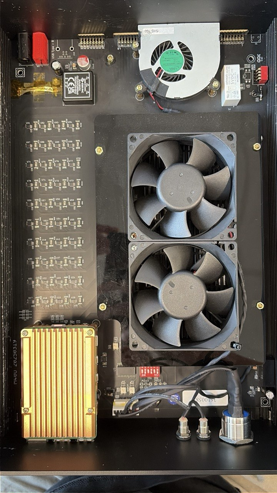
The SMU I was debugging and repairing.
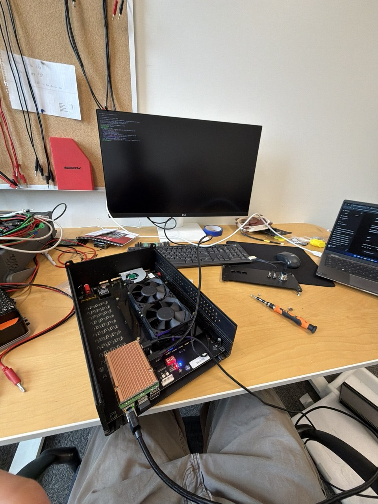
Connecting the Raspberry Pi to the SMU for diagnostics and reconfiguration.
Rochester test and calibration station
I helped establish the factory acceptance testing (FAT) station by
planning the equipment budget, sourcing bench hardware, and coordinating
with the engineering team in Indonesia to obtain calibration and load boards.
I proposed specifications for a 400 W programmable power supply and a
programmable digital multimeter.
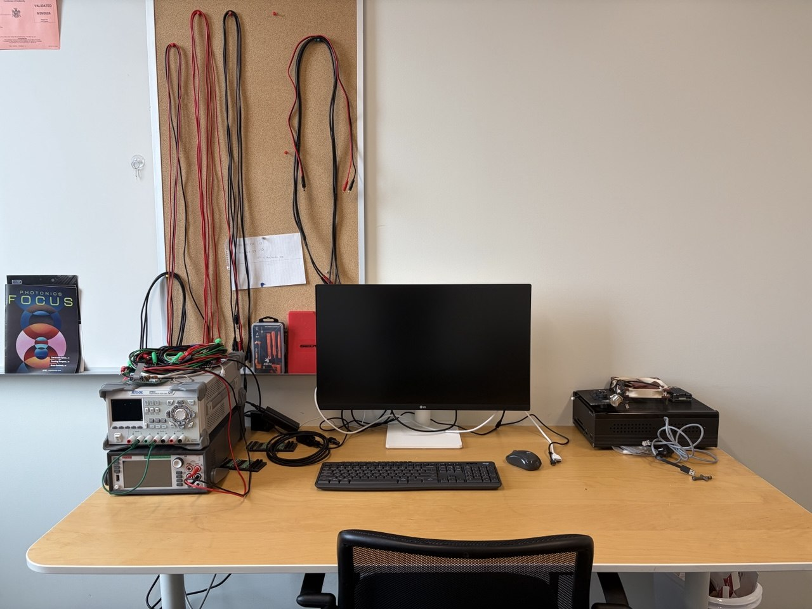
The testing station I helped set up (there was nothing before).
Remote diagnostics
I located the embedded Raspberry Pi controllers on the Ethernet network,
accessed them over SSH, and verified their roles in the configuration
files so I could troubleshoot the units remotely.
I also designed a resistor-grid PCB concept for an interactive heat-map
demo(althogh the project was not completed since it was towards the end of my internship and an extra side
project).
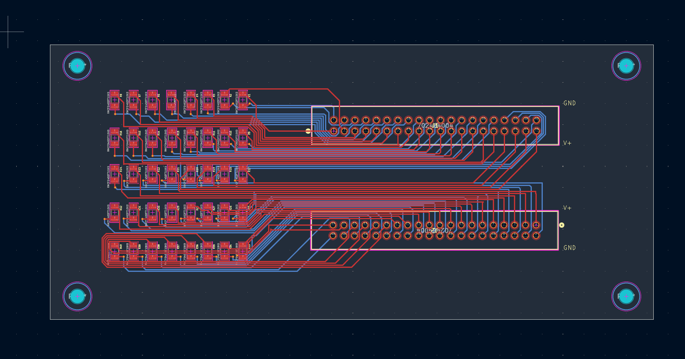
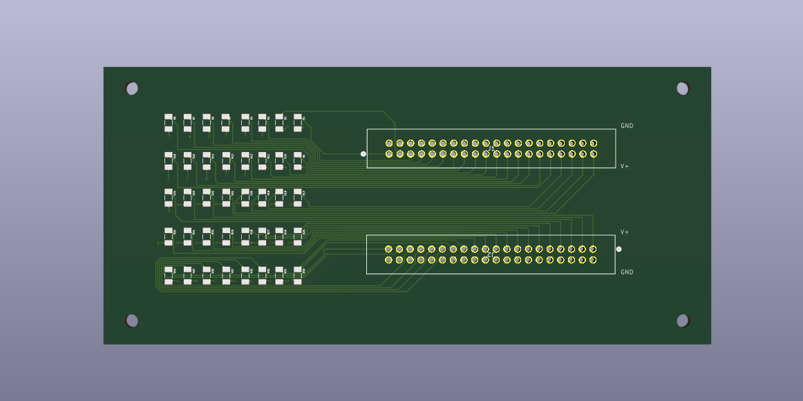
PCB schematic for the resistor-grid demo.
Embedded RF & Telemetry Project
Off-Grid LoRa Digital Contact Tracker & Telemetry GUI
Base station with a Heltec ESP32-S3R2 board and an external LoRa antenna.
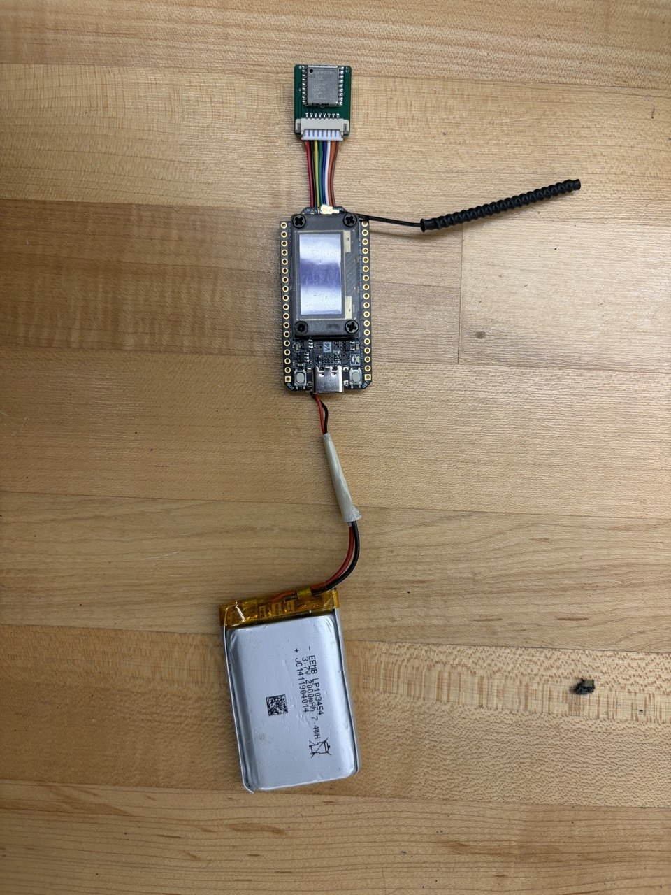
Mobile tracker with a Quectel L76K GNSS module and a LiPo battery.
System Architecture & Highlights
Our team built and field-tested a bidirectional LoRa GPS tracker using Heltec
ESP32-S3R2 boards with onboard SX1262 radios. The link reached about 3.2 km
in Rochester at spreading factor 12 and 125 kHz bandwidth in the 915 MHz band.
Stop-and-wait retries handled missed acknowledgments, while LoRa's built-in
forward error correction helped recover from bit errors. At the long-range settings, a
240-byte file chunk took about 11 seconds on air, so our team extended the timeouts to
keep file transfers from stalling.
I developed the Python map interface and integrated it with the team's
command-line tool for the USB-connected base station. The interface plotted the tracker's
GPS position, displayed altitude and signal strength, and supported manual pings,
automatic polling, and file transfers.
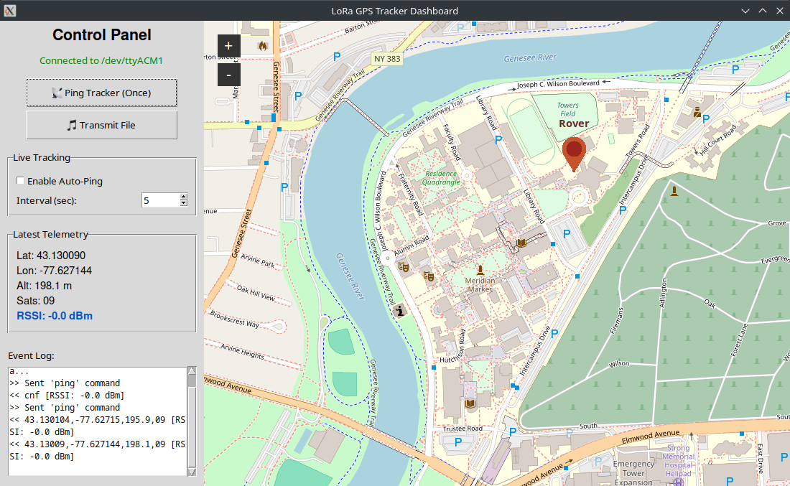
The python GUI map interface showing the LoRa tracker position and signal strength.
Robotics & Kinematics Project
6-DOF Robotic Arm Inverse Kinematics Control System
Tech Stack: C++, ROS 2, Eigen Library, Unit Quaternions, RViz2
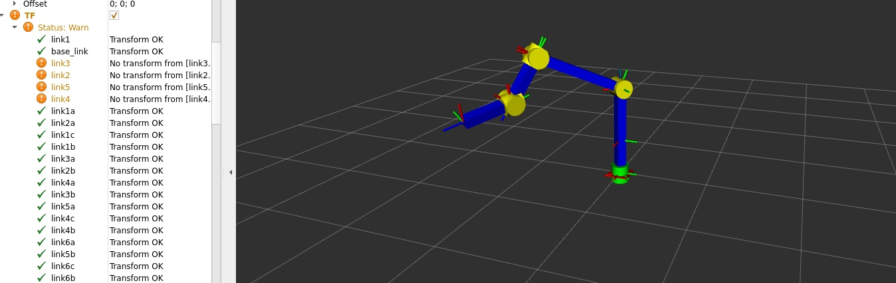
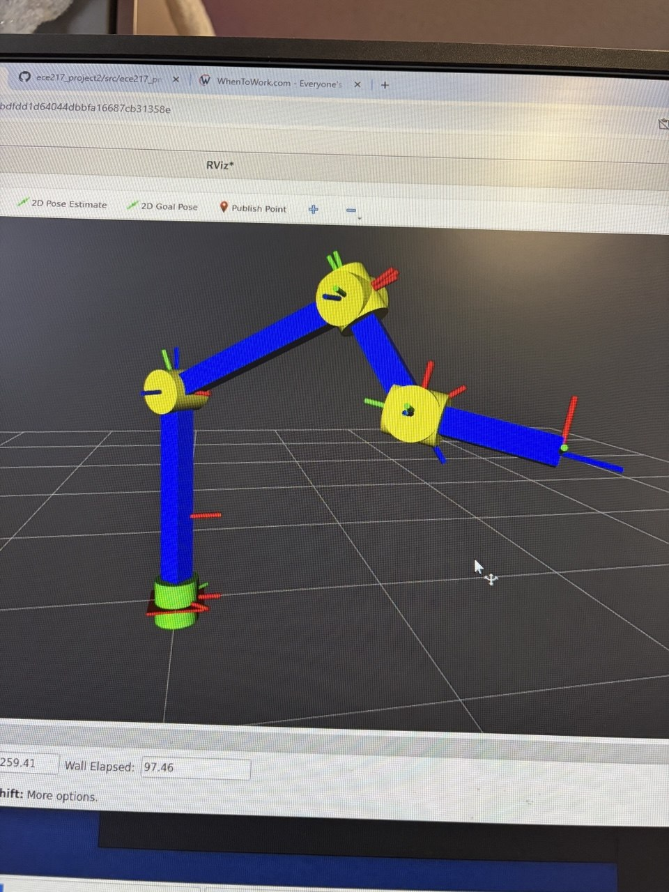
Six-axis arm model used to visualize joint motion in RViz2.
System Architecture & Highlights
Built a 6-DOF arm controller in C++ and ROS 2 for a manipulator with a spherical wrist.
A command-line client sends the starting joint angles and target end-effector position and orientation
to the control service.
Implemented Jacobian-based inverse kinematics using Denavit–Hartenberg transforms
and a 6×6 geometric Jacobian in Eigen. The solver uses position error and quaternion-based
orientation error to update the six joint angles.
Visualized and tested the arm motion by publishing intermediate angles on
/joint_states for RViz2. The solver converged on the assigned test pose within the
project's five-second limit, stopping when the weighted pose error norm fell below
0.0001.
University of Rochester • Independent Study with Prof. Hui Wu
Drone Power Distribution & Avionics
STM32F4 • 4S LiPo • Electronic Speed Controllers
System Architecture & Highlights
Power distribution. Designed a 4S LiPo harness
(14.8 V nominal) for four brushless motors with an 800 W peak design
load. Routed high-current motor wiring separately from RF and telemetry
lines to limit interference.
Avionics integration. Integrated the STM32F4
flight controller and electronic speed controllers, soldering more than
20 connections during preparation for flight testing.
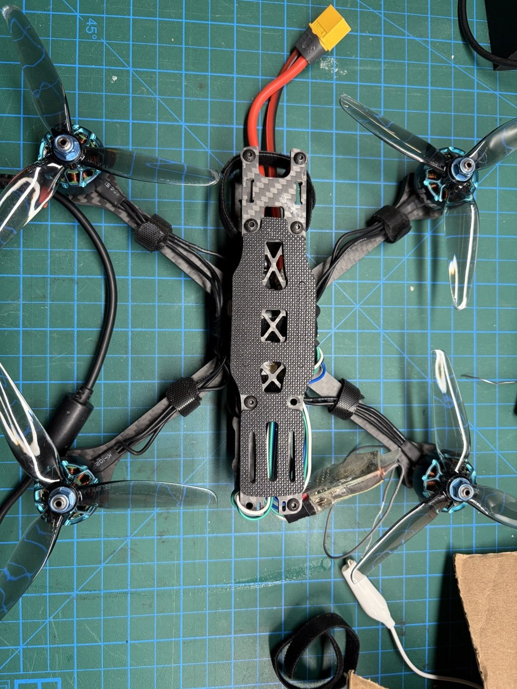
Drone fully integrated without power supply.
University of Rochester • ECE 216 Mechatronics
PIC32 Motor Position Control
C • PIC32MX • Quadrature Encoder • H-Bridge
System Architecture & Highlights
Closed-loop control. Implemented an interrupt-driven
proportional-integral (PI) controller in C to position a DC gearmotor
at a commanded shaft angle.
Encoder feedback and motor drive. Tracked shaft
angle with a quadrature encoder at 0.076° per count. Used 10-bit
output-compare PWM to drive the motor through an H-bridge.
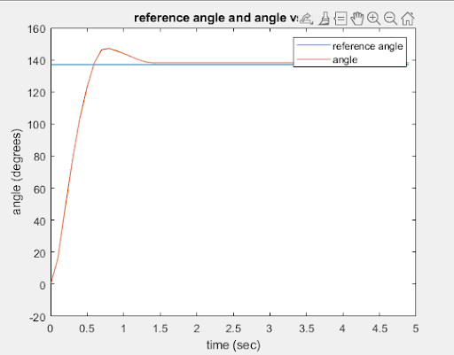
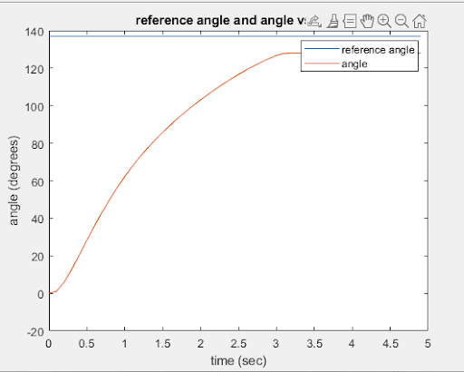
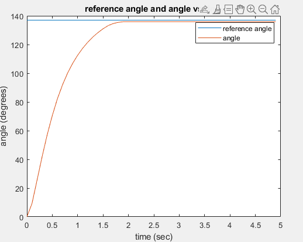
Some transient response plots of the motor position control system, tweaking some of the control parameters to get a better response.